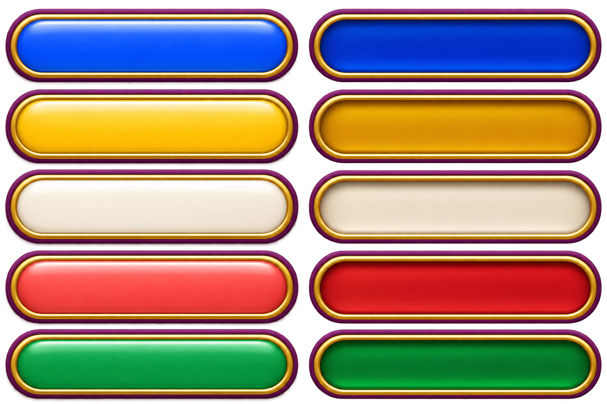

PC · x64
Windows 完整版
包含完整过场。解压整个 ZIP，运行 Rich4/Start.vbs，无需 Steam。请保留完整目录结构。
经典棋盘 · 再聚一局
选一张熟悉的地图，约朋友进同一个房间。掷骰、买地、用卡片，在 Windows 和 Android 上一起玩。
最多 4 人 · 8 张经典地图 · Windows / Android

准备好，开始下一局
本期版本 v0.1.9-preview.20261108。一起联机的玩家，请使用同一批次版本。
PC · x64
包含完整过场。解压整个 ZIP，运行 Rich4/Start.vbs，无需 Steam。请保留完整目录结构。
手机 · ARM64
适用于 Android 8.0 及以上的 ARM64 设备。保留游戏内动画、音乐和语音；独立过场可在设置中按需下载。
下载 Android APK 294 MB同一个世界，三种布局
展示全部 21 张效果图，点击图片可放大。
封面忍太郎已按确认的头部修正护额；开始游戏合并原有两种开局入口。
四个席位、房间聊天与编辑结束自动保存的设计。
PC 展示显示页；手机展示音画页，横竖屏独立排版。
AI 接管、破产清算、外星人暂离。
开始游戏后统一选择八张经典地图。
十二个角色，默认原角色名，游戏时间默认无限期。
只用小头像和图标显示行动顺序；游戏内造型仍需按原版校准。
只用小头像和图标显示行动顺序；游戏内造型仍需按原版校准。

PC 设计目标：窗口最低 1280 × 720，提供四档可用分辨率；全屏铺满显示器，比例变化时扩展地图视野。手机横竖屏自适应全屏。以上是新界面实施要求，不是本期安装包的新增验收结论。
发一个口令，等朋友加入
主菜单选择 ONLINE，填写昵称和六位房间口令。服务器地址可在游戏内查看和修改，已保存的自定义设置优先。Windows 自建房需 Python 3.10+；加入已有房间无需安装 Python。
房主从八张经典地图中选择地图，设置期限和席位。空席位在开局时补入 AI，关闭的席位不参与对局。
每位玩家选择离线预案，再点“确认并准备”。全员准备后由房主开始。联机不提供存档；突发断线默认暂离。
轻装安装，按需补全
可选下载 · 不影响游戏内动画
在游戏中进入「系统设置 → 过场资源」。当前版本按该入口操作，新界面效果见上方设置图。
按需下载独立过场。已完成文件可复用；未完成的单个文件重试时从头下载。
下载完成后按喜好开启或关闭独立过场。道具、神仙、卡片等游戏内动画始终保留。
轻量 APK 不包含独立过场；Windows 完整包已包含。
查看可选过场资源 ↗当前提供 Windows ZIP 与 Android ARM64 轻量 APK，Android 使用开发签名。现有本地四端和 Android 模拟器混合对局证据，不等于所有真实网络环境均已验证；公网完整对局验收仍未完成。实体手机及实体四机验收已移出当前范围。目前没有 iOS 安装包。